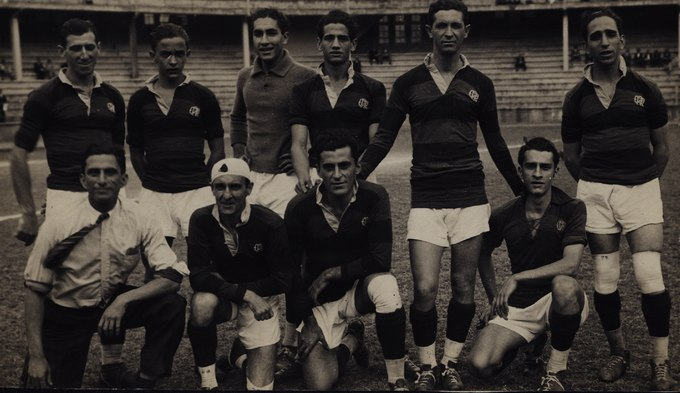
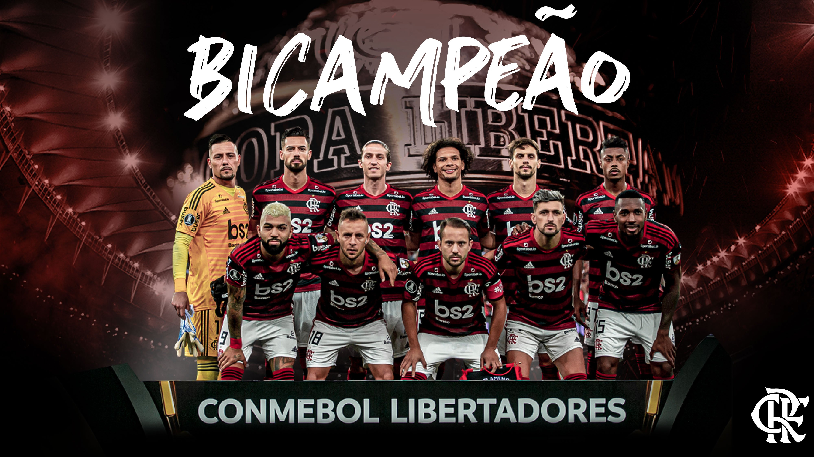

20 de Março de 1933
"O Mais Querido do Brasil"

Em 1927, um concurso promovido pela água mineral Salutaris e pelo Jornal do Brasil objetivou eleger o "clube mais querido do Brasil". O torcedor deveria escrever o nome do seu time favorito no rótulo da garrafa d'água, ou no cupom impresso no jornal, e envia-lo preenchido para a sede do Jornal do Brasil, no Rio de Janeiro. O vencedor levaria para sua sede a portentosa Taça Salutaris e o "título" de clube mais querido do Brasil. Ao final da apuração, o Flamengo
somou 254.850 votos e venceu a disputa. Atualmente, a Taça Salutaris é exibida em local de destaque na sala de troféus
do Clube de Regatas do Flamengo, ladeada pela Copa Libertadores da América e pela Taça Intercontinental de 1981.
23 de Novembro de 2019
A Libertadores de 2019

A final da Copa Libertadores da América de 2019 foi a 60.ª final desta competição, organizada anualmente pela
Confederação Sul-Americana de Futebol (CONMEBOL). Foi vencida pela equipe brasileira do Flamengo, que sagrou-se campeã
pelo placar de 2–1 sobre a equipe argentina do River Plate. Pela primeira vez na história, foi disputada em jogo único no dia 23 de novembro de 2019. O Flamengo saiu-se vencedor pela segunda vez na história, exatos 38 anos após a conquista de 1981. Como vencedor,
garantiu o direito de participar do Mundial de Clubes de 2019, no Catar, além do direito de disputar a Recopa
Sul-Americana de 2020 contra o Independiente del Valle, do Equador, campeão da Copa Sul-Americana de 2019. Com a
conquista do título continental, o técnico da equipe, Jorge Jesus, tornou-se o segundo técnico europeu campeão da
competição, sendo o primeiro português.